All of the black (oil) paint was flaking off.After: Cleaned; In-painted; varnished.
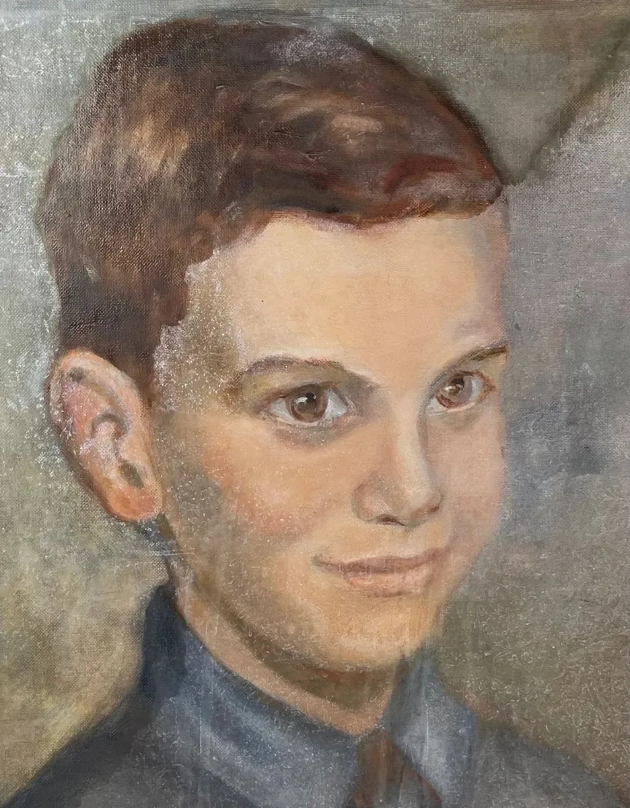
Oil painting of "Howard". Suffered damage in a fire.
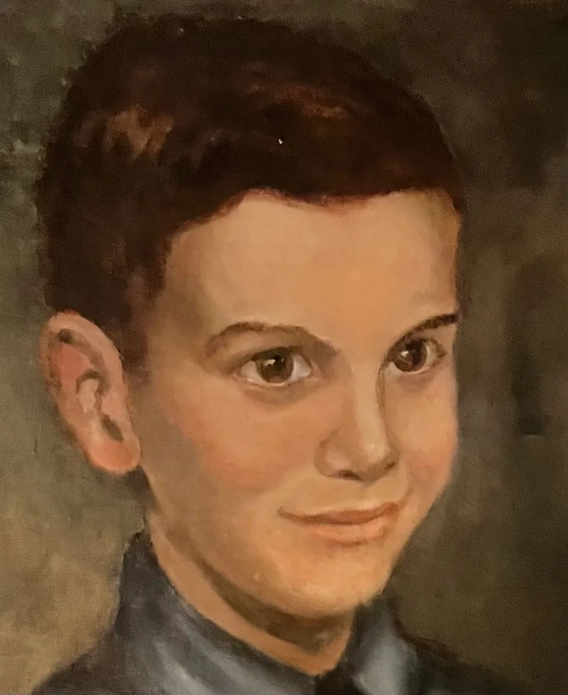
After: Cleaned front and back; in-painting; varnish to preserve painting.
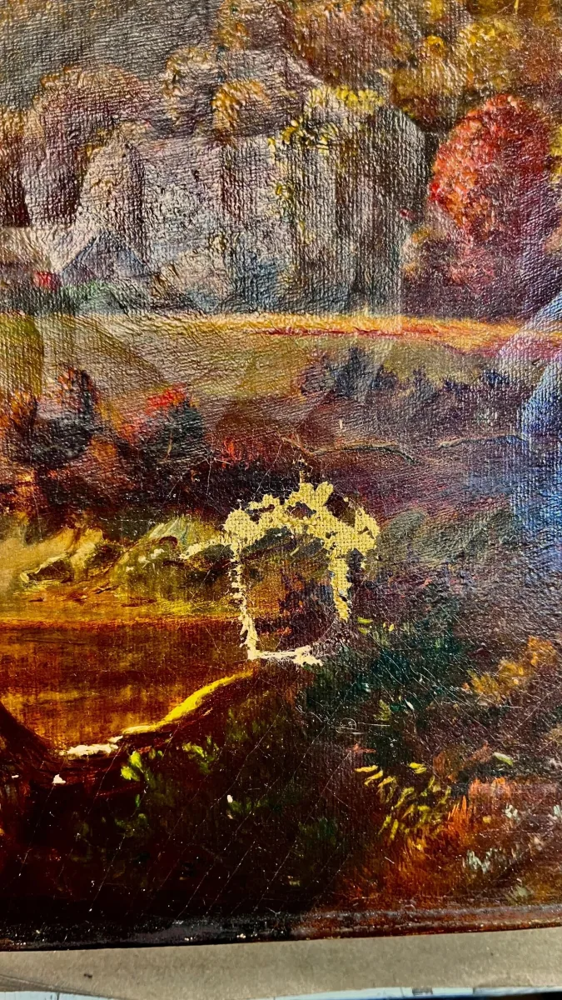
Quarter-sized hole puncture through thinning canvas.
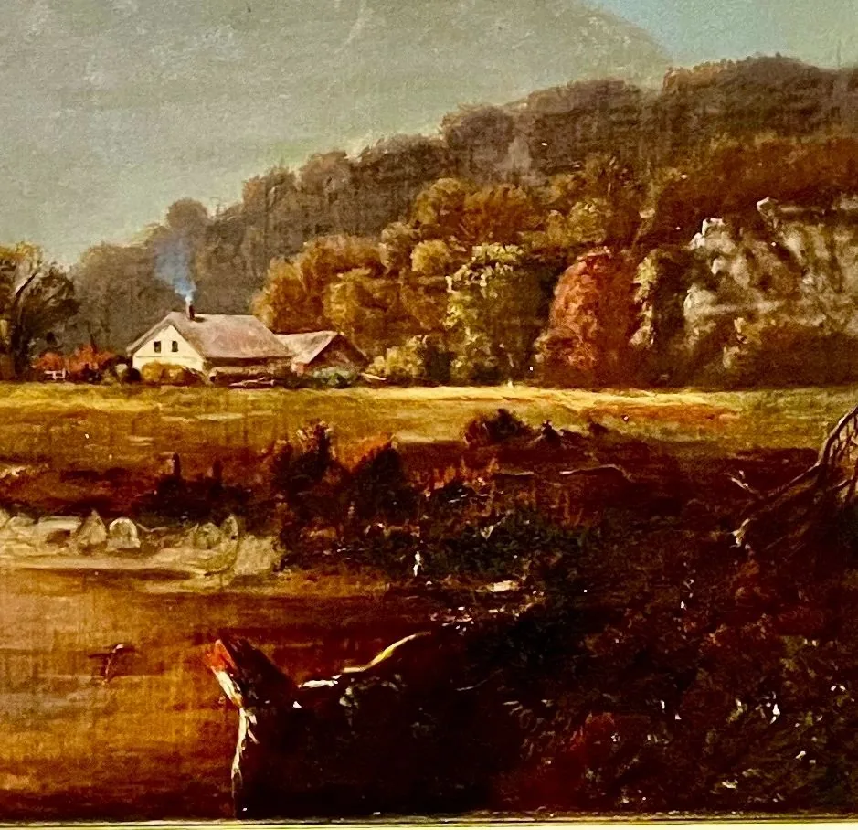
After: Oil painting cleaned; hole repaired.
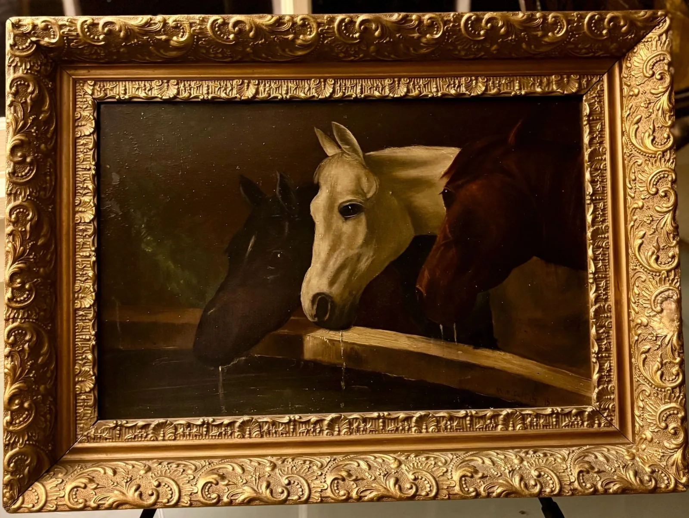
Oil painting on tin sign. Paint flaking.
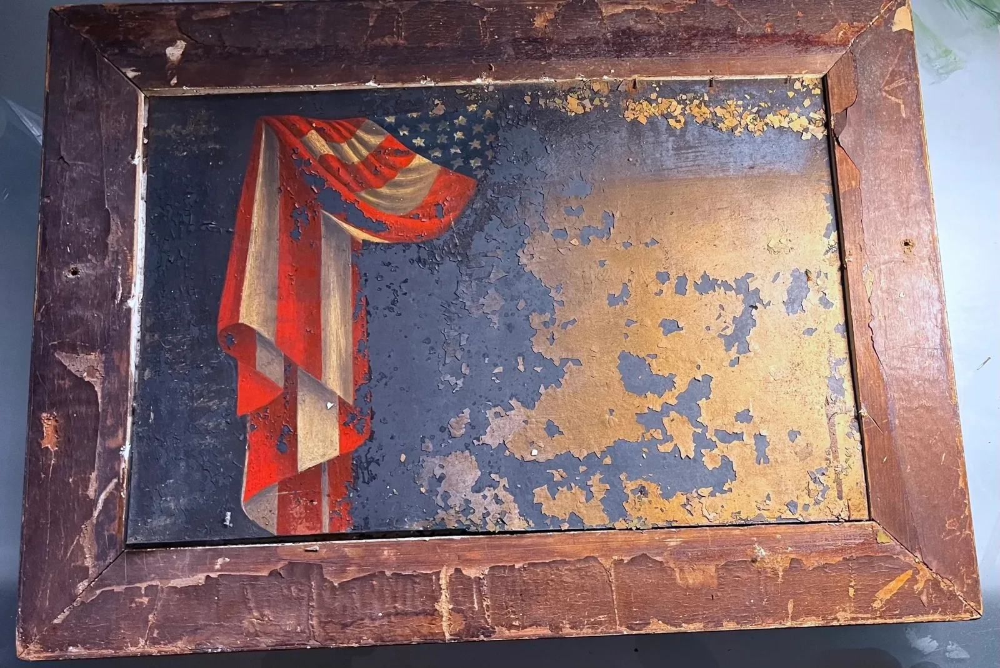
Back of horse painting: original tin sign of flag. Paint flaking. Stabilised paint; varnished to secure paint.
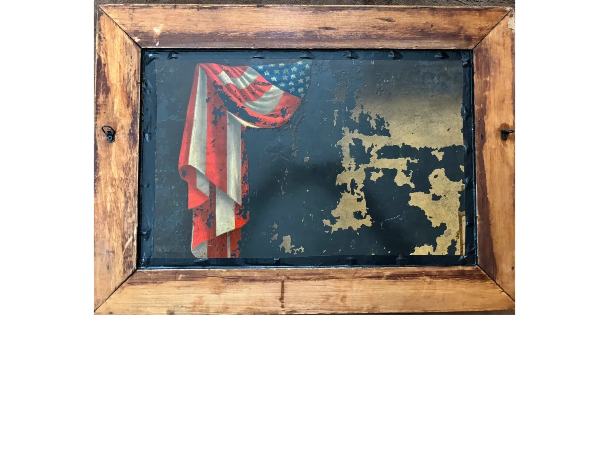
After: Back left uncovered to view.
Tempera painting was deteriorating due to environmental influences. Missing/flaked paint substantial.After: Cleaned front and back; stabilised paint; in-painted missing/flaked areas; UV protective varnish.
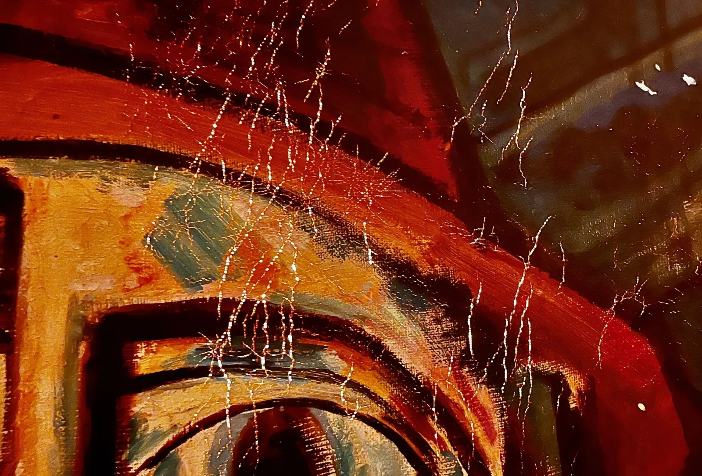
Close-up: Hundreds of holes/cracks, deterioration of particular colours; fading/flaking.After: All cracks and holes filled; in-painted; UV protective varnish.
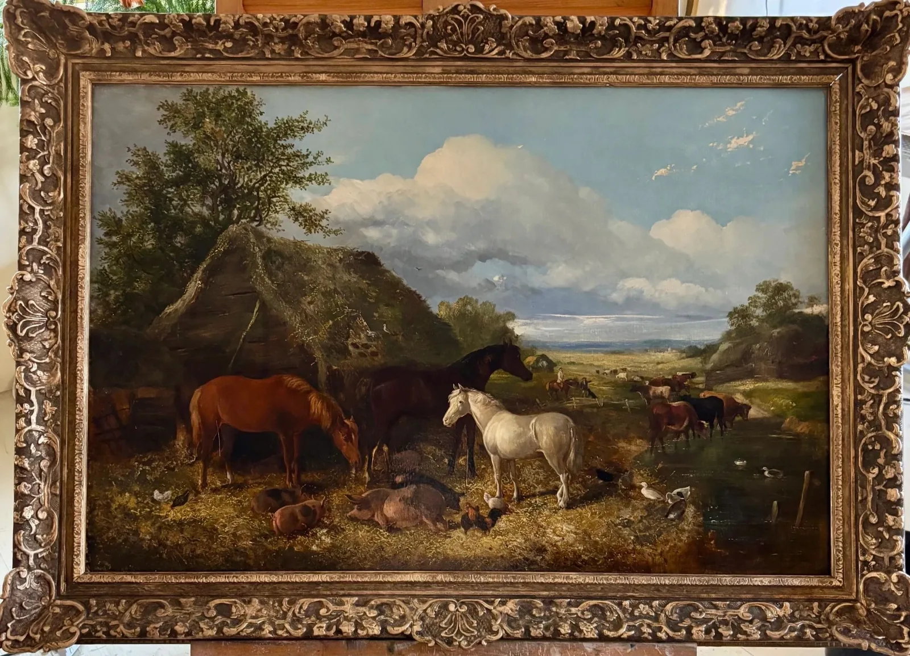
Oil painting with years of environmental damage.
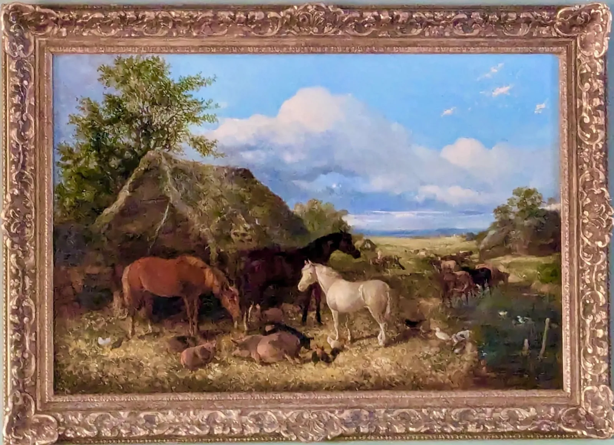
After: Varnish removed/cleaned; In-painting; new varnish.
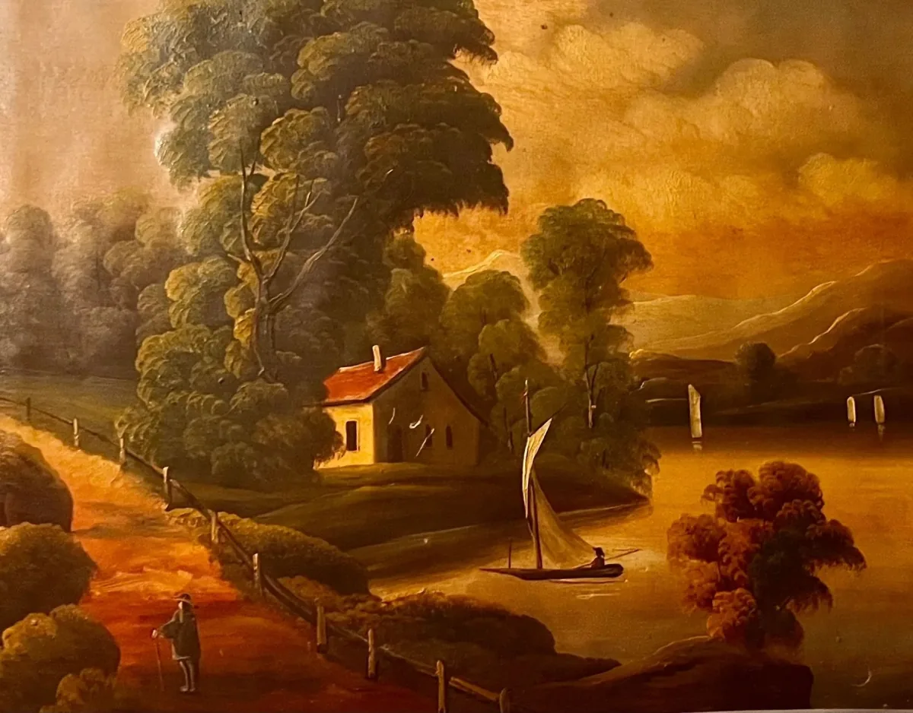
19th Century oil painting with heavy environmental damage.